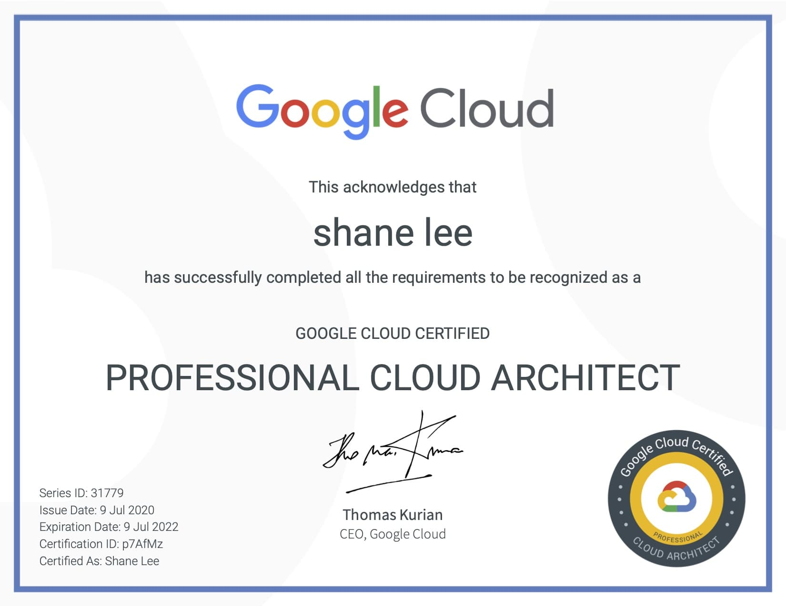

So why Google cloud??
Well, the Google Cloud Platform (GCP) is behind the 8 ball for sure in comparison to AWS. But with the huge spike in companies looking to reduce their Capex and move to the cloud, its offerings in the data analytics space for example is very enticing. Also in my view, they have the best managed kubernetes service GKE. Which makes sense, when you understand that kubernetes originated from googles own internal cluster orcherstration service called borg.
I have worked with AWS for many years professionally. Gaining exposure to other cloud providers is important when you see companies adopting a multi-cloud approach but fundamentally many of the underlying patterns and managed services commonly exist across the top 3 (AWS, GCP, Azure).
Up until recently I did not fully understand where Anthos fit into the picture. But now I do. By bringing compute closer to the data, existing cloud users can now use the likes of GKE and BigQuery. Nicely played Google! If the mountain won't come to muhammed... ☺️
Certification
This certification allowed me to analyse and understand the majority of GCP services. But also provide a solid understanding of architectural best practices when it comes to design considerations, security, reliability and cost optimisation.
Exam Preparation
There are several training providers out there that provide courses specific to this exam: Coursera, Udemy, Linux academy to name but a few.
Coursera’s:
Linux Academy’s:
I took the updated course from Linux Academy’s Google Cloud Certified Professional Cloud Architect.
Linux Academy’s updated course was a good choice as it covers the majority of exam related GCP based topics and its practice sessions are an added advantage associated after each lesson. Their master builders guide was a very important document that I referred back to many times.
I also like to be hands on, so I signed up to qwiklabs and completed many of the quests they provide in relation to GCP. It's extremely helpful especially if you do not have your own google cloud account.
Google also provides a learning path as an alternative option.
Exam registration
Register for the exam when you are about 1 week into your study. This allows you to book in a slot not too far in the future and keeps you motivated.
Exam layout
The exam is two hours long. You can take it remotely or at a test centre ( I took it at home). There are 50 questions - multiple choice and multiple select. The GCP case studies take up about 12 questions with the rest, GCP in general.
Exam score
The passing marks are not shared by Google in any of GCP exam except it tells about pass or fail. However it has been assumed from various blogs and training providers that it’s roughly around 80% for GCP exams though no official confirmation about it.
Exam readiness
Check your readiness by taking the google practice exam and Linux academys (if you have signed up for the course). If you are not scoring 90% or above, then keep studying!
Tips
You will have plenty of time to go back and review marked questions. So make sure if you are stuck, mark question and move on.
Eliminate answers that you know are incorrect
Look out for main keywords in the question - speeds, low latency, failover, serverless etc etc
Final suggestions
Remember to deeply learn Kubernetes, Bigdata services(Big Query, BigTable), NoSQL options, App engine, Storage, IAM, BigQuery Roles, Case studies..
Googles new architecture framework is a very useful resource too.

Still waiting on my bag!! Best of luck.